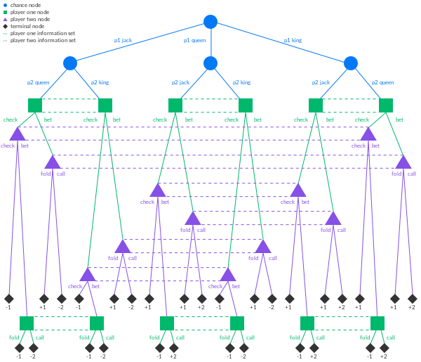

For the past few days I’ve been wanting to learn about modern game-playing AIs, and what are the main techniques out there powering them. I remember years ago when I started reading computer science books about heuristic search techniques and programming a Tic-Tac-Toe AI using various tree search algorithms. I was fairly interested in reinforcement learning for awhile, read about MCTS and DeepMind’s successes with AlphaGo, but then I got busy with other stuff and ended up not reading much on it afterwards.
Recently I’ve started to get back into reading about reinforcement learning for imperfect information games (games in which each player has private information about the state of the game that they do not share with each other). It turns out that many of these techniques require a fair amount of background in game theory and their solution concepts, so I figured I’d write some notes on the topic.
In this post, which should be the first of at least 2 more, we will give a brief overview of the definitions and concepts from classical game theory that we need, restricting ourselves to two-player zero-sum games. Then we’ll introduce the optimization idea of regret minimization, and give an overview of counterfactual regret minimization, an efficient implementation of regret minimization for imperfect information games.
game theory
In this section we will give an brief introduction to some game-theoretic concepts, rushing to introduce the central concept of a Nash equilibrium of a normal-form game.
First, we should define what we mean by a normal form game. We will be considering games where there are multiple agents (say, \(n\) of them), and where each agent can take a certain action \(a_i\) from it’s action space \(A_i\). In these games, all agents perform their action simultaneously, with the actions of the other agents not influencing immediately each other. In this way, the game’s outcome is determined by the single action profile \[ a = (a_1, ..., a_n) \in A = A_1 \times ... \times A_n \] What would cause an agent to take a particular action over others? In this setting we assume each agent is equipped with a utility function \(u_i: A\rightarrow \mathbb{R}\) that effectively gives the payoff that each action profile gives to the \(i\)th agent. It is then a fair assumption that the goal of an agent is to maximize their payoff.
It can be convenient (especially in low-dimensions) to represent a normal-form game as a \(n\)-dimensional matrix of payoffs. For example, a canonical example is the prisoner’s dilemma problem
SILENT CONFESS
-----------------------
SILENT | (-1, -1) | (-5, 0) |
CONFESS | (0, -5) | (-3, -3) |
-----------------------Here, the rows denote the action of the first player, while the columns are the action of the second player. For example, if player 1 confesses and player 2 stays silent, the entry \((0, -5)\) means player 1 gets a payoff of 0 and player 2 gets a payoff of -5.
We mention that we are most interested at the moment in zero-sum games, which are a particular class of two player normal-form games in which the sum of the payoffs of the agents is always 0, regardless of the action profile. Zero-sum games encapsulates games in which “one player’s loss is another’s gain”.
pareto optimality
How an agent chooses an action from its action space in a game is called it’s strategy. It could select a single action and play it, which is called a pure strategy. However, it is convenient if an agent can choose among many different actions, where the action to play is sampled from a probability distribution. The choice of a distribution over actions is called a mixed strategy.
In a normal-form game, each agent takes a strategy \(s_i\), which collectively forms a strategy profile \(s=(s_1,...,s_n)\). We can extend each agent’s utility function to a function on strategy profiles \(u_i(s_1,...,s_n)\) by defining it as the expected utility marginalized over the joint distribution of action profiles.
Since the goal of every agent is to maximize their utility, this induces a strict partial ordering on the set of (mixed) strategy profiles: a profile \(s\) Pareto dominates another strategy profile \(s'\) if for all agents \(i\), \(u_i(s) \ge u_i(s'\)), and there exists an agent \(j\) in which \(u_j(s) > u_j(s')\). In other words, in a Pareto dominated strategy profile some player can be made better off without making any other player worse off. The optima of this partial ordering are called Pareto optimal strategies.
A few observations about Pareto optimality: first, every game has at least one Pareto optimal strategy. In fact, we can always find a Pareto optimal strategy composed of pure strategies for each agent– for example, for agent \(1\), we can consider the set of pure strategy profiles with the highest payoff for them (there may be multiple action profiles with the same payoff). Then for agent \(2\), we choose the subset of that set that has the highest payoff for them, etc. The resulting pure strategy profiles are all Pareto optimal. Second, in a zero-sum game, all strategy profiles are Pareto optimal.
nash equilibrium
For each agent \(i\), let \(s_i\) denote a (mixed) strategy the agent could take, and \(s_{-i}=(s_1,...,s_{i-1}, s_{i+1},...,s_n)\) a strategy profile without agent \(i\) considered. That is, we are isolating agent \(i\)’s strategy from a full strategy profile \(s=(s_i, s_{-i})\) for the game.
If agent \(i\) knew the strategy profile \(s_{-i}\) of the other agents, it could choose the strategy \(s^*_i\) that would be benefit itself. That is, for any other strategy \(s'_i\), \[ u_i(s^*_i, s_{-i}) \ge u_i(s'_i, s_{-i}) \] We call \(s^*_i\) the best response of agent \(i\) to the other’s strategy \(s_{-i}\).
If the other agents knew of each other’s strategies, they would all be continually trying to change their strategies in order to implement the best responses to one another. Iteratively, they may eventually reach a stable state– they may reach a strategy profile \(s=(s_1,...,s_n)\) in which for all agents \(i\), \(s_i\) is a best response to the remainder \(s_{-i}\). This is a Nash equilibrium. Note that equilibria may not be unique.
Since we’re working with zero-sum games, there are a couple of properties Nash equilibria enjoy that we will use. For one, in zero-sum games the Nash equilibria are interchangable: if \(s=(s_1, s_2)\) is a Nash equilibrium and \(s' = (s'_1, s'_2)\) is another, then \((s_1, s'_2)\) and \((s'_1, s_2)\) are both Nash equilibria.
Proof: Recall in a zero-sum game, we have for any strategy profile \(s\), \(u_1(s) + u_2(s) = 0\). We can see then that \[ u_1(s_1, s_2) = -u_2(s_1, s_2) \le -u_2(s_1, s'_2) = u_1(s_1, s'_2) \le u_1(s'_1, s'_2) \] By symmetry, we get \(u_1(s_1, s_2) \ge u_1(s'_1, s'_2)\), and so \(u_i(s_1, s_2) = u_i(s'_1, s'_2)\).
Consider the profile \((s_1, s'_2)\), and let \(s''_1\) be another strategy that agent \(1\) could take. Using the above equality we can see \[ u_1(s''_1, s'_2) \le u_1(s'_1, s'_2) = -u_2(s'_1, s'_2) \] since \((s'_1, s'_2)\) is a Nash equilibrium. By the above, \(u_2(s'_1, s'_2) = u_2(s_1, s_2)\) so \[ -u_2(s'_1, s'_2) = -u_2(s_1, s_2) \le -u_2(s_1, s'_2) = u_1(s_1, s'_2)\] Combining with above, we see that \(s_1\) is the best response for agent \(1\) for the strategy \(s'_2\) of agent \(2\). A symmetric argument for a strategy \(s''_2\) taken by agent \(2\) shows that \((s_1, s'_2)\) is a Nash equilibrium. The case for \((s'_1, s_2)\) follows similarly. \(\square\)
The second property is one that we proved in the proof above: in a zero-sum game, the expected payoff to each player is the same for every Nash equilibrium.
computing equilibria
Let’s restrict for now to the case of two-player zero-sum games. How would we compute the Nash equilibria of such a game? We first introduce the maxmin strategy for an agent.
Suppose we have a conservative agent– they would want to maximize their expected utility regardless of what the other agents do. In particular, they would seek a strategy that maximizes their expected utility in the worst case scenario that the other agents act to minimize their payoff. This is the maxmin strategy \[ \underline{s}_i = \arg\max_{s_i}\min_{s_{-i}}{u_i(s_i, s_{-i})} \] The payoff from this strategy is the maxmin value \[ \underline{v}_i = \max_{s_i}\min_{s_{-i}}{u_i(s_i, s_{-i})} \] Analogously, an agent could seek a strategy to maximally punish the payoffs of their opponents, regardless of the damage to themselves. This leads to the minmax strategy and value \[ \overline{v}_i = \min_{s_i}\max_{s_{-i}}{u_i(s_i, s_{-i})} \] Note that in general, \(\underline{v}_i \le \overline{v}_i\). However, when we’re in a finite two-player zero-sum game, we can prove something even stronger. Let \((s^*_i, s^*_{-i})\) be a Nash equilibrium and \(v^*_i\) be the expected utility of agent \(i\) in this equilibrium.
First, we observe that \(v^*_i \ge \underline{v_i}\). This is because if \(v^*_i < \underline{v}_i\) then agent \(i\) could gain greater utility by using their maxmin strategy instead, which is a contradiction to \(s^*\) being a Nash equilibrium. In an equilibrium, all agents acts according to their best response to the other’s strategies: \[ v^*_{-i} = \max_{s_{-i}}{u_{-i}(s^*_i, s_{-i})} \] As we’re in a zero-sum game, \(v^*_i = -v^*_{-i}\) and \(u_i=-u_{-i}\), so \[ \begin{aligned} v^*_i &= -v^*_{-i} \\ &= -\max_{s_{-i}}{u_{-i}(s^*_i, s_{-i})} \\ &= \min_{s_{-i}}{-u_{-i}(s^*_i, s_{-i})} \\ &= \min_{s_{-i}}{u_i(s^*_i, s_{-i})} \end{aligned} \] By definition then, \[ \underline{v}_i = \max_{s_i}\min_{s_{-i}}{u_i(s_i, s_{-i})} \ge \min_{s_{-i}}{u_i(s^*_i, s_{-i})} = v^*_i \] Hence \(\underline{v}_i = v^*_i\) and so our maxmin strategy is actually a Nash equilibrium! This is the minimax theorem proven by von Neumann in 1928.
In general, computing the Nash equilibria of a general normal-form game is computationally difficult (even from a complexity theory standpoint)! More precisely, a few years ago Babichenko-Rubinstein show that there is no guaranteed method for players to find even an approximate Nash equilibrium unless they tell each other almost everything about their preferences.
We instead focus on a different solution type that is more computationally efficient, the correlated equilibria, which is a strict generalization of Nash equilibrium. It helps to start with an example:
STOP GO
-------------------------
STOP | (0, 0) | (0, 1) |
GO | (1, 0) | (-100, -100) |
-------------------------In this traffic light game, each player has two actions– stop or go. It’s clear that there are two pure-strategy Nash equilibria, the off-diagonals (GO, STOP) and (STOP, GO). However, these are not ideal, as only one person benefits in either situation.
Let’s try and compute a mixed strategy Nash equilibrium for this game. Let the strategy of the first player be \(\sigma=(p, 1-p)\) where \(p\) is the probability of GO. How do we choose \(p\)? It should be chosen such that if player 2 plays with a best response, player 1 plays in such a way that player 2 is indifferent between their actions, that is
\[ u_2(\sigma, \text{GO}) = u_2(\sigma, \text{STOP}) \]
If this were to not hold, e.g. \(u_2(\sigma, \text{GO}) > u_2(\sigma, \text{STOP})\), then player 2 would have a better time choosing GO more often, contradicting that they play with a best response. Computing out the expected utilities, we have
\[ 1\cdot (1-p) - 100p = 0 \]
which implies \(p = 1/101\). Hence in a mixed Nash equilibrium, both players go at a traffic stop with absurdly low probability! This is obviously very unideal.
Luckily, this isn’t how traffic stops at intersections work in the real world. In this game-theoretic setting, each mixed strategy that goes into a Nash equilibrium gives a probability distribution over actions for each player– however, each action ends up choosing their action independently, without any communication between them. In real-life, we have traffic lights, which act as a signal to both players which suggests their action. This correlates the action of each player without fixing them to a single pure strategy.
This gives us the idea of a correlated equilibrium: a distribution \(\mathcal{D}\) over action profiles \(A\) is a correlated equilbrium if for each player \(i\) and action \(a^*_i\), we have
\[ \mathbf{E}_{a\sim\mathcal{D}}[u_i(a)] \ge \mathbf{E}_{a\sim\mathcal{D}}[u_i(a^*_i, a_{-i})|a_i] \]
that is, after a profile \(a\) is drawn, playing \(a_i\) is a best response for player \(i\) conditioned on seeing \(a_i\), given that everyone else will play according to \(a\). In the traffic light game, conditioned on seeing STOP, a player knows the other player sees GO so their best response is to STOP, and vice versa.
Correlated equilibria generalize Nash equilibrium– any Nash equilibrium is a correlated one, in the case that each player’s actions are drawn from independent distributions, i.e.
\[ \Pr(a|\sigma) = \prod_{i\in N} \Pr(a_i|\sigma) \]
Despite looking as complex the definition of a Nash equilibrium, correlated equilibria are much more tractable to compute: they can be computed using no-regret learning, i.e. regret minimization. We discuss this next.
regret minimization
In this section we give the basics of regret minimization, treating it initially from the perspective of online optimization. Let \(\mathcal{X}\) be a space of strategies for a given agent. We consider decision processes in which at time \(t=1,2,...\) the agent (player) will play an action \(x_t\in\mathcal{X}\), receive “feedback” from the environment (the game, other players, etc) and then use it to formulate a response \(x_{t+1}\in\mathcal{X}\).
Given \(\mathcal{X}\) and a set \(\Phi\) of linear transforms \(\phi:\mathcal{X}\rightarrow\mathcal{X}\), a \(\Phi\)-regret minimizer for \(\mathcal{X}\) is a model for a decision maker that repeatedly interacts with the environment via the API
NextStrategywhich outputs a strategy \(x_t\in\mathcal{X}\) at decision time \(t\).ObserveUtility(\(\ell^t\)) which updates the decision-making process of the agent, in the form of a linear utility function (or vector) \(\ell^t:\mathcal{X}\rightarrow\mathbf{R}\).
The quality metric of our minimizer is given by cumulative \(\Phi\)-regret
\[ R^T_\Phi = \max_{\hat{\phi}\in\Phi}\left\{\sum_{t=1}^T\left(\ell^t(\hat{\phi}(x_t))-\ell^t(x_t)\right)\right\} \]
where the interior term \(\ell^t(\hat{\phi}(x_t))-\ell^t(x_t)\) is the regret at time \(t\) of not changing our strategy by \(\hat{\phi}\). The goal of a \(\Phi\)-regret minimizer is to guarantee its \(\Phi\)-regret grows asymptotically sublinearly as \(T\rightarrow\infty\).
Intuitively, the class \(\Phi\) of functions constraints the kind of “regret” we can feel– a function \(\phi\in\Phi\) tells us how we could have hypothetically swapped out our choice of action for a more optimal one, and the regret measures how much better that choice could have been for our decision. In this way, we want to minimize our regret by more often choosing optimal actions.
For an example of a class \(\Phi\), we can take \(\Phi=\{\text{all linear maps }\mathcal{X}\rightarrow\mathcal{X}\}\). Then the notion of \(\Phi\)-regret is called swap regret. Intuitively, it is the measure of how much a player can improve by switching any action we choose to the best decision possible in hindsight.
Note: If we restrict our choice of \(\Phi\) to be \(\Phi=\{\phi_{a\rightarrow b}\}_{a,b\in\mathcal{X}}\) where
\[ \begin{equation} \phi_{a\rightarrow b}(x) = \begin{cases} x & \text{if } x\neq a\\ b & \text{if } x=a \end{cases} \end{equation} \]
then we get the closely related concept of internal regret.
A very special case of \(\Phi\)-regret comes when \(\Phi\) is the set of constant functions.
Defn: (Regret minimizer) An external regret minimizer for \(\mathcal{X}\) is a \(\Phi^{\text{const}}\)-regret minimizer for
\[ \Phi^{\text{const}} = \left\{\phi_{\hat{x}}: x\mapsto \hat{x}\right\}_{\hat{x}\in\mathcal{X}} \]
The \(\Phi^{\text{const}}\)-regret is just called external regret
\[ R^T = \max_{\hat{x}\in\mathcal{X}}\left\{\sum_{t=1}^T\left(\ell^t(\hat{x}) - \ell^t(x_t)\right)\right\} \]
Regret minimizers are useful in helping us find best responses in various game-theoretic settings. Suppose we’re playing an \(n\)-player game where players \(1,...,n-1\) play stochastically, i.e. at each time \(t\), we get a strategy \(x^{(i)}_t\in\mathcal{X}^{(i)}\) with
\[ \mathbf{E}[x^{(i)}_t] = \bar{x}^{(i)}\in\mathcal{X}^{(i)} \]
We let player \(n\) picks strategies according to an algorithm that guarantees sublinear external regret (i.e. via a \(\Phi^{\text{const}}\)-regret minimizer), where the utility function is given by the multilinear payoff functional
\[ \ell^t(x^{(n)}) = u_n(x^{(1)}_t, x^{(2)}_t,..., x^{(n-1)}_t, x^{(n)}) \]
The claim is that the average of player \(n\)’s strategies converges to the best response to \(\bar{x}^{(1)},...,\bar{x}^{(n-1)}\):
\[ \frac{1}{T}\sum_{t=1}^T x^{(n)}_t \xrightarrow{T\rightarrow\infty} \operatorname*{argmax}_{\hat{x}^{(n)}\in\mathcal{X}^{(n)}}\left\{u_n(\bar{x}^{(1)},...,\bar{x}^{(n-1)}, \hat{x}^{(n)})\right\} \]
To see this, note that by multilinearity,
\[ \begin{align*} R^T &= \max_{\hat{x}\in\mathcal{X}^{(n)}}\left\{\sum_{t=1}^T\left(u_n(x^{(1)}_t,...,\hat{x})-u_n(x^{(1)}_t,...,x^{(n)}_t)\right)\right\} \\ &= \max_{\hat{x}\in\mathcal{X}^{(n)}}\left\{\sum_{t=1}^T u_n(x^{(1)}_t,...,\hat{x}-x^{(n)}_t)\right\} \end{align*} \]
and as \(\frac{R^T}{T}\to 0\) by sublinearity of regret, this proves that \(\frac{1}{T}\sum_{t=1}^T x_t^{(n)}\to\hat{x}\).
Our main use of regret minimization is to compute (correlated) equilibria. Let’s restrict to the case of two-person zero-sum games. Given strategies \(x\in\mathcal{X}\subset\mathbf{R}^n, y\in\mathcal{Y}\subset\mathbf{R}^m\) and a linear payoff matrix \(A\in\operatorname{Mat}_{n,m}\) for player 1, the utility of player 1 is given by \(x^\top A y\).
We seek a Nash equilibrium, which we have prove is a minimax solution
\[ \max_{x\in\mathcal{X}}\min_{y\in\mathcal{Y}} x^\top A y \]
i.e. we want to use regret minimization to compute a bilinear saddle point.
Rmk: In two-player zero-sum games, regret minimization processes will converge to Nash equilibria, since in this situation there are no extra correlated equilibria. This intuitively makes sense since zero-sum games are purely adversarial and there is no “gain” from cooperation in these situations. For some extended thoughts on this, see this paper of Rosenthal.
To compute these equilibria, we create a regret minimizer \(\mathcal{R}_\mathcal{X}, \mathcal{R}_\mathcal{Y}\) per player with utility functions
\[ \begin{align*} \ell^t_\mathcal{X} &: x\mapsto (Ay_t)^\top x \\ \ell^t_\mathcal{Y} &: y\mapsto -(A^\top x_t)^\top y_t \end{align*} \]
where \(x_t, y_t\) are strategies generated by the regret minimizers at time \(t\). This idea is called self-play.
Let \(\gamma\) be the saddle point gap
\[ \begin{align*} \gamma(x,y) &= \left(\max_{\hat{x}\in\mathcal{X}} \hat{x}^\top Ay - x^\top Ay\right) + \left(x^\top Ay - \min_{\hat{y}\in\mathcal{Y}} x^\top A\hat{y}\right) \\ &= \max_{\hat{x}\in\mathcal{X}} \hat{x}^\top Ay - \min_{\hat{y}\in\mathcal{Y}} x^\top A\hat{y} \end{align*} \]
where the left term is the best response payoff to \(t\) and right right term is the best response payoff to \(x\) (both in the perspective of player 1). If \(\gamma(x,y)=0\) then the strategy profile \(\sigma=(x,y)\) is a Nash equilibrium.
Thm: As \(T\to\infty\), the average strategies \(\bar{x}=\frac{1}{T}\sum_{t=1}^T x_t\) and \(\bar{y}=\frac{1}{T}\sum_{t=1}^T y_t\) approaches a Nash equilibrium.
Proof: By definition, we can write
\[ \begin{align*} \frac{1}{T}\left(R^T_\mathcal{X} + R^T_\mathcal{Y}\right) &= \frac{1}{T}\max_{\hat{x}\in\mathcal{X}}\left\{\sum_{t=1}^T\left(\ell_\mathcal{X}^t(\hat{x})-\ell_\mathcal{X}^t(x_t)\right)\right\} + \frac{1}{T}\max_{\hat{y}\in\mathcal{Y}}\left\{\sum_{t=1}^T\left(\ell_\mathcal{Y}^t(\hat{Y})-\ell_\mathcal{Y}^t(y_t)\right)\right\} \\ &= \frac{1}{T}\max_{\hat{x}\in\mathcal{X}}\left\{\sum_{t=1}^T \ell^t_\mathcal{X}(\hat{x})\right\} + \frac{1}{T}\max_{\hat{y}\in\mathcal{Y}}\left\{\sum_{t=1}^T \ell^t_\mathcal{Y}(\hat{y})\right\} \end{align*} \]
as \(\ell^t_\mathcal{X}(x_t) + \ell_\mathcal{Y}^t(y_t) = (Ay_t)^\top x_t - (A^\top x_t)^\top y_t = 0\). Continuing,
\[ \begin{align*} &= \frac{1}{T}\max_{\hat{x}\in\mathcal{X}}\left\{\sum_{t=1}^T \hat{x}^\top Ay_t\right\} + \frac{1}{T}\max_{\hat{y}\in\mathcal{Y}}\left\{\sum_{t=1}^T (-x_t^\top A\hat{y} \right\} \\ &= \max_{\hat{x}\in\mathcal{X}}\hat{x}^\top A\bar{y} - \min_{\hat{y}\in\mathcal{Y}} \bar{x}^\top A\hat{y} \\ &= \gamma(\bar{x}, \bar{y}) \end{align*} \]
By sublinearity of the regret minimizers, \(\frac{R^T_\mathcal{X}+R^T_\mathcal{Y}}{T}\to 0\). \(\square\)
minimax via regret
In this section, we get another glimpse into the power of regret minimizers in optimization problems by reproving the minimax theorem. We first start with the easy part– note that since
\[ \min_{y\in\mathcal{Y}} x^\top Ay \le x^\top Ay \]
we get automatically that applying \(\max_{x\in\mathcal{X}}\) on both sides is also true. Since the right side is then still a function of \(y\), we can minimize it and get
\[ \max_{x\in\mathcal{X}}\min_{y\in\mathcal{Y}} x^\top Ay \le \min_{y\in\mathcal{Y}}\max_{x\in\mathcal{X}} x^\top Ay \]
This is weak duality.
To prove the minimax theorem, we need to prove the inequality in the other direction. As in the previous regret learning situation, we play a repeated game between a regret minimizer an the environment: \(\mathcal{R}_\mathcal{X}\) chooses a strategy \(x_t\in\mathcal{X}\) and the environment plays \(y_t\in\mathcal{Y}\) such that \(y_t\) is a best response:
\[ y_t \in\operatorname*{argmin}_{y\in\mathcal{Y}} x_t^\top Ay \]
The utility function observed by \(\mathcal{R}_\mathcal{X}\) at each time \(t\) is given by
\[ \ell^t_\mathcal{X}: x\mapsto x^\top Ay_t \]
We assume that \(\mathcal{R}_\mathcal{X}\) gives sublinear regret in the worst case. Let \(\bar{x}^T=\frac{1}{T}\sum_{t=1}^T x_t\) and \(\bar{y}^T=\frac{1}{T}\sum_{t=1}^T y_t\) be the average strategies up to time \(T\). For all \(t\),
\[ \max_{x\in\mathcal{X}}\min_{y\in\mathcal{Y}} x^\top Ay \ge \frac{1}{T}\min_{y\in\mathcal{Y}}\sum_{t=1}^T x_t^\top Ay \text{ as each } \min_{y\in\mathcal{Y}} x^\top_t Ay\le \max_{x\in\mathcal{X}}\min_{y\in\mathcal{Y}} x^\top Ay \]
As each \(y_t\) is the best response of the environment to the strategy \(x_t\), we have
\[ \min_{y\in\mathcal{Y}} x_t^\top Ay = x^\top_t Ay_t \]
so that
\[ \max_{x\in\mathcal{X}}\min_{y\in\mathcal{Y}} x^\top Ay \ge \frac{1}{T}\min_{y\in\mathcal{Y}}\sum_{t=1}^T x_t^\top Ay \ge \frac{1}{T}\sum_{t=1}^T x^\top_t Ay_t \]
By definition of regret \(R^T_\mathcal{X}=\max_{\hat{x}\in\mathcal{X}}\left\{\sum_{t=1}^T\left(\hat{x}^\top Ay_t-x^\top_t Ay_t\right)\right\}\) so
\[ \begin{align*} \frac{1}{T}\sum_{t=1}^T x_t^\top Ay_t &\ge \frac{1}{T}\max_{\hat{x}\in\mathcal{X}}\sum_{t=1}^T \hat{x}^\top Ay_t - \frac{R^T_\mathcal{X}}{T} \\ &\ge \min_{y\in\mathcal{Y}}\max_{x\in\mathcal{X}} x^\top Ay - \frac{R^T_\mathcal{X}}{T} \end{align*} \]
By sublinearity, \(\frac{R^T_\mathcal{X}}{T}\to 0\), so we see that
\[ \max_{x\in\mathcal{X}}\min_{y\in\mathcal{Y}} x^\top Ay \ge \min_{y\in\mathcal{Y}}\max_{x\in\mathcal{X}} x^\top Ay \]
This proves minimax.
regret matching
In order to perform regret minimization, we require computable algorithms to generate decisions with sublinear regret guarantees, i.e. regret minimizers for domain sets \(\mathcal{X}\). A fundamental no-regret algorithm is given by regret matching, which gives a sublinear regret minimizer for probability simplices
\[ \Delta^n = \left\{(x_1,...,x_n)\in\mathbf{R}^n_{\ge 0} : x_1 +...+ x_n = 1\right\} \]
which model one-shot decision processes (such as agent actions in normal-form games).
Remember that a regret minimizer for \(\Delta^n\) is given by
NextElementoutputting an element \(x_t\in\Delta^n\), andObserveUtility(\(\ell^t\)) computes environment feedback on this action \(x_t\) given a linear utility vector \(\ell^t\in\mathbf{R}^n\) that evaluates how good \(x_t\) was. Note that we are overloading notation here, as \(\ell^t\) is really a function
\[ \ell^t:\Delta^n\to\mathbf{R}\text{ given by } x\mapsto\langle\ell^t, x\rangle \]
This minimizer \(\mathcal{R}\) should have its cumulative regret
\[ R^T = \max_{\hat{x}\in\Delta^n}\left\{ \sum_{t=1}^T\left(\langle\ell^t,\hat{x}\rangle - \langle\ell^t,x_t\rangle\right)\right\} \]
grow sublinearly as \(T\to\infty\), regardless of the utility vectors \(\ell^t\) chosen by the environment.
We describe the regret matching algorithm, along with a Python implementation. Recall that to implement a regret minimizer, we need to complete a specific API:
import numpy as np
class RegretMinimizer:
@abstractmethod
def next_strategy(self) -> np.ndarray:
raise NotImplementedError
@abstractmethod
def observe_utility(self, utility_vec: np.ndarray):
raise NotImplementedErrorRegret matching will be a specific instance of a regret minimizer. Such decision-generating agents have some internal state that allows it to update its strategies over time (i.e. learning). At time 0, for regret matching we set a cumulative regret vector \(r_0\in\mathbf{R}^n\) to \(\mathbf{0}\) and we set an initial (uniform) strategy \(x_0=\left(\frac{1}{n},...,\frac{1}{n}\right)\in\mathbf{R}^n\) where \(n\) here is the number of actions \(|\mathcal{X}|\) the agent following this strategy can make.
class RegretMatcher(RegretMinimizer):
def __init__(self, num_actions: int):
self.num_actions = num_actions
self.regret_sum = np.zeros(num_actions)
self.current_strategy = np.zeros(num_actions)
self.last_strategy = np.zeros(num_actions)Suppose at time \(t\) we are given a strategy \(x_t\in\mathbf{R}^n\). How do we update our regret vector \(r_{t-1}\) to \(r_t\) and use it to generate the next strategy? The intuition behind regret matching is that we should choose the actions that we regret not having chosen in the past more often.
Given \(r_{t-1}\), let \(\theta_t = [r_{t-1}]^+\) to be the vector gotten by setting any negative terms in the vector to 0. In this sense, negative regret is useless to us, since we don’t want to disincentivize choosing an action that already is giving us benefits. However, \(\theta_t\) may no longer be in \(\Delta^n\), but we can force it by normalizing. So we take as our next strategy
\[ x_t = \frac{\theta_t}{\|\theta_t\|_1} \]
In code,
def next_strategy(self) -> np.ndarray:
regrets = np.copy(self.regret_sum)
regrets[regrets < 0] = 0
normalizing_sum = np.sum(regrets)
if normalizing_sum > 0:
strategy = regrets / normalizing_sum
else:
# default to uniform
strategy = np.repeat(1 / self.num_actions, self.num_actions)
self.current_strategy = strategy
self.strategy_sum += strategy
return strategyGiven a feedback vector \(\ell^t\), we want to now update our internal state in order to generate better strategies. Often, we can interpret our feedback utility vector from the environment as
\[ \ell^t_a = \text{the payoff gotten if we purely chose action a} \]
Consider the term
\[ \alpha_t = \ell^t - \langle\ell^t, x_t\rangle \mathbf{1} \]
where \(\mathbf{1}\) is the vector \((1,...,1)\in\mathbf{R}^n\). Interpreting \(\langle\ell^t, x_t\rangle\) as the expected utility of \(x_t\), we can interpret the vector \(\alpha_t\) as
\[ \alpha_{t,a} = \text{the regret of not purely choosing action a} \]
To update our cumulative regret, we fold this into the mix: \(r_t = r_{t-1} + \alpha_t\).
def observe_utility(self, utility_vector: np.ndarray):
expected_utility = np.dot(utility_vector, self.current_strategy)
regrets = utility_vector - expected_utility
self.regret_sum += regretsPerforming this iterative gives the regret matching algorithm.
Rmk: If we take \(r_t=[r_{t-1}+\alpha_t]^+\) instead, we get the \(\text{regret matching}^+\) algorithm.
composition and swap-regret*
This section could be skipped on a first reading!
Now that we have a regret minimizer for \(\Delta^n\), can we build regret minimizers for other spaces? Since we can hope to build up our spaces as compositions of probability simplices, if we had rules to combine regret minimizers for certain algebraic operations we could generically build regret minimizers for a whole range of domain spaces \(\mathcal{X}\).
Suppose \(\mathcal{R}_\mathcal{X}\), \(\mathcal{R}_\mathcal{Y}\) are regret minimizers for \(\mathcal{X}\) and \(\mathcal{Y}\) respectively. Trivially, we get a regret minimizer for \(\mathcal{X}\times\mathcal{Y}\) by
class Product(RegretMinimizer):
def __init__(self, r_x: RegretMinimizer, r_y: RegretMinimizer):
self.r_x, self.r_y = r_x, r_y
def next_strategy(self) -> np.ndarray:
x_t = self.r_x.next_strategy()
y_t = self.r_y.next_strategy()
return np.concatenate([x_t, y_t], axis=0)
def observe_utility(self, utility_vector: np.ndarray):
num_actions_x = self.r_x.num_actions
self.r_x.observe_utility(utility_vector[:num_actions_x])
self.r_y.observe_utility(utility_vector[num_actions_x:])It is clear that
\[ R^T_{\mathcal{X}\times\mathcal{Y}} = R^T_\mathcal{X} + R^T_\mathcal{Y} \]
so if \(\mathcal{R}_\mathcal{X}\), \(\mathcal{R}_\mathcal{Y}\) have sublinear regret, so does \(\mathcal{R}_{\mathcal{X}\times\mathcal{Y}}\).
Less trivially, consider the algebraic operation given by the convex hull \(\operatorname{conv}(\mathcal{X}, \mathcal{Y})\). Here we are assuming that \(\mathcal{X},\mathcal{Y}\subset\mathbf{R}^n\). Along with regret minimizers \(\mathcal{R}_\mathcal{X}\), \(\mathcal{R}_\mathcal{Y}\), we also need a regret minimizer for the simplex \(\Delta^2\) (which we can luckily use the regret matching algorithm above)!
Then we get a regret minimizer for \(\operatorname{conv}(\mathcal{X}, \mathcal{Y})\) via
class ConvexHull(RegretMinimizer):
def __init__(self, r_x: RegretMinimizer, r_y: RegretMinimizer):
self.r_x, self.r_y = r_x, r_y
self.r_simplex = RegretMatcher(2)
def next_strategy(self) -> np.ndarray:
x_t = self.r_x.next_strategy()
y_t = self.r_y.next_strategy()
p1_t, p2_t = self.r_simplex.next_strategy()
return p1_t * x_t + p2_t * y_t
def observe_utility(self, utility_vector: np.ndarray):
self.r_x.observe_utility(utility_vector)
self.r_y.observe_utility(utility_vector)
utility_augmented_vec = np.array([
np.dot(utility_vector, self.r_x.current_strategy),
np.dot(utility_vector, self.r_y.current_strategy)
])
self.r_simplex.observe_utility(utility_augmented_vec)How does the cumulative regret grow in this case? By definition,
\[ \begin{align*} R^T &= \max_{\hat{\lambda}\in\Delta^2, \hat{x}\in\mathcal{X},\hat{y}\in\mathcal{Y}}\left\{ \sum_{t=1}^T\hat{\lambda}_1(\ell^+)^\top\hat{x}+\hat{\lambda}_2(\ell^+)^\top\hat{y} \right\} - \left( \sum_{t=1}^T\lambda_1^t(\ell^+)^\top x_t + \lambda_2^t(\ell^+)^\top y_t\right) \\ &= \max_{\hat{\lambda}\in\Delta^2}\left\{ \hat{\lambda}_1\max_{\hat{x}\in\mathcal{X}}\left\{\sum_{t=1}^T(\ell^+)^\top\hat{x}\right\} + \hat{\lambda}_2\max_{\hat{y}\in\mathcal{Y}}\left\{\sum_{t=1}^T(\ell^+)^\top\hat{y}\right\}\right\} - \left(\sum_{t=1}^T\lambda_1^t(\ell^+)^\top x_t + \lambda_2^t(\ell^+)^\top y_t\right) \end{align*} \]
as all components \(\hat{\lambda}_1, \hat{\lambda}_2\) are nonnegative. Also,
\[ \max_{\hat{x}\in\mathcal{X}}\left\{\sum_{t=1}^T(\ell^+)^\top\hat{x}\right\} = R^T_\mathcal{X} + \sum_{t=1}^T(\ell^+)^\top x_t \]
and similarly for the other inner term. So
\[ R^T = \max_{\hat{\lambda}\in\Delta^2}\left\{ \left(\sum_{t=1}^T \hat{\lambda}_1(\ell^+)^\top x_t + \hat{\lambda}_2(\ell^+)^\top y_t\right) + \hat{\lambda}_1 R^T_\mathcal{X} + \hat{\lambda}_2 R^T_\mathcal{Y} \right\} - \left(\sum_{t=1}^T\lambda^t_1(\ell^+)^\top x_t + \lambda^t_2(\ell^+)^\top y_t\right) \]
As for \((\hat{\lambda}_1, \hat{\lambda}_2)\in\Delta^2\), we have trivially
\[ \hat{\lambda}_1 R^T_\mathcal{X} + \hat{\lambda}_2 R^T_\mathcal{Y} \le \max\{R^T_\mathcal{X}, R^T_\mathcal{Y}\} \]
which implies
\[ R^T \le R^T_{\Delta} + \max\{R^T_\mathcal{X}, R^T_\mathcal{Y}\} \]
Hence if \(R^T_\mathcal{X}, R^T_\mathcal{Y}, R^T_{\Delta}\) grow sublinearly, so does \(R^T\).
We close this section with the construction of a no-swap regret learning algorithm for the simplex \(\Delta^n\). In the literature, a lot of research is focused on creating external regret minimizers. However, in the previous section we gave a definition of \(\Phi\)-regret minimization for general \(\Phi\). How can we construct no-\(\Phi\) regret learners generically?
In 2008, a paper by Gordon et al. gives a way to construct a \(\Phi\)-regret minimizer for \(\mathcal{X}\) from a regret minimizer over the set of functions \(\phi\in\Phi\).
Theorem (Gordon et al.): Let \(\mathcal{R}\) be a deterministic regret minimizer over \(\Phi\) with sublinear cumulative regret, and assume each \(\phi\in\Phi\) has a fixed point, \(\phi(x)=x\in\mathcal{X}\). Then a \(\Phi\)-regret minimizer \(\mathcal{R}_\Phi\) can be constructed from \(\mathcal{R}\) as:
class PhiRegretLearner(RegretMinimizer):
def __init__(self, regret_learner: RegretMinimizer):
self.regret_learner = regret_learner
self.last_fixpoint = None
def next_strategy(self) -> np.ndarray:
# since regret_learner is a regret minimizer over \Phi
phi_t = self.regret_learner.next_strategy()
# get fixed point
x_t = fixpoint(phi_t)
self.last_fixpoint = x_t
return x_t
def observe_utility(self, utility_vec: np.ndarray):
x_t = self.last_fixpoint
def _linear_utility_functional(phi):
return np.dot(utility_vec, phi(x_t))
self.regret_learner.observe_utility(_linear_utility_functional)where we assume fixpoint is a function that can deterministically get a fixed point of the function \(phi\in\Phi\). Furthermore, \(R^T=R^T_\Phi\), so \(\mathcal{R}_\Phi\) has sublinear regret.
Proof: For a sequence \(\phi_1,\phi_2,...\) output by \(\mathcal{R}\) with utilities \(\phi\mapsto\langle\ell^1,\phi(x_1)\rangle,\phi\mapsto\langle\ell^2,\phi(x_2)\rangle,...\) we have
\[ R^T=\max_{\hat{\phi}\in\Phi}\left\{\sum_{t=1}^T\left(\langle\ell^t,\hat{\phi}(x_t)\rangle-\langle\ell^t,\phi_t(x_t)\rangle\right)\right\} \]
As \(\phi_t(x_t)=x_t\), we get
\[ R^T = \max_{\hat{\phi}\in\Phi}\left\{\sum_{t=1}^T\left(\langle\ell^t,\hat{\phi}(x_t)\rangle-\langle\ell^t,x_t\rangle\right)\right\} \]
which is exactly \(R^T_\Phi\). \(\square\).
As an application of this theorem, we will construct a no-swap regret learner for \(\Delta^n\). Recall that swap regret learning is the same as \(\Phi^\text{all}\)-regret minimization, where
\[ \Phi^\text{all} = \left\{\text{all linear functions }\Delta^n\to\Delta^n\right\} \]
for \(\Delta^n = \left\{(x_1,...,x_n)\in\mathbf{R}^n_{\ge 0} : x_1 +...+ x_n = 1\right\}\). Note that a linear map \(f:\mathbf{R}^n\to\mathbf{R}^n\) restricts to a map \(\Delta^n\to\Delta^n\) if it sends the basis vectors \(\{e_1,...,e_n\}\) to \(\{v_1,...,v_n\}\subset\Delta^n\). But \(v_i\in\Delta^n\) implies that the matrix \(M\) formed by the \(v_i\)’s concatenated together as column vectors is (column)-stochastic, i.e. columns sum to 1 and is nonnegative.
So in this case, \(f(x)=Mx\) where \(M\) is stochastic, so we can describe for the probability simplex case that
\[ \Phi^\text{all} = \left\{M\in\mathbf{R}^{n\times n}_{\ge 0}: M\text{ is column-stochastic}\right\} \]
Note that since each column in \(M\) can be considered independently (we’re not claiming that \(f\) sends \(\{e_1,...,e_n\}\) to linearly independent images) we have \(\Phi^\text{all}\simeq\Delta^n\times\cdot\cdot\cdot\times\Delta^n\) where the product is taken \(n\) times. We can get a regret minimizer for \(\Phi^\text{all}\) then as an algebraic composition of \(n\) regret matchers \(\mathcal{R}_{\Delta^n}\), where theoretically
\[ R^{\text{ext},T}_\Phi = n R^T_{\Delta^n} \le n\Omega\sqrt{T} \]
for some constant \(\Omega\). Therefore, \(R^{\text{ext},T}_\Phi\) is sublinear.
Following Gordon et al., to use the theorem we need each \(M\in\Phi^\text{all}\) to have a fixed point. But \(M:\Delta^n\to\Delta^n\) must have one by the Brouwer fixed point theorem. Hence the theorem gives a \(\Phi^\text{all}\)-regret minimizer, i.e. a no-swap regret learner \(\mathcal{R}_\Phi\) for \(\Delta^n\):
class SwapRegretMinimizer(RegretMinimizer):
def __init__(self, num_actions: int):
self.num_actions = num_actions
self.current_strategy = None
self.regret_matchers = [
RegretMatcher(num_actions)
for _ in range(num_actions)
]
def next_strategy(self) -> np.ndarray:
simplex_vectors = []
for i in range(self.num_actions):
v_i = self.regret_matchers[i].next_strategy()
simplex_vectors.append(v_i)
# concat to form stochastic matrix
M = np.column_stack(simplex_vectors)
# get fixed point
x_t = fixpoint(M)
self.current_strategy = x_t
return x_t
def observe_utility(self, utility_vector: np.ndarray):
for i in range(self.num_actions):
simplex_util_vec = self.current_strategy[i] * utility_vector
self.regret_matchers[i].observe_utility(simplex_util_vec)This algorithm agrees with the one presented by Blum-Mansour.
counterfactual regret minimization
We will now try to compute Nash equilibria of imperfect information zero-sum games in extensive form. At this point, the post is getting pretty long and I still think the wikipedia page on extensive-form games is pretty good for defining the key terms.
The main thing to keep in mind is that in imperfect information games, each player can be “occupying” multiple nodes simultaneously in a single turn, which represents their uncertainty of the stochastic state their opponent is in (e.g., what cards they are holding in a card game). Because of that, an “equivalence class” of nodes with respect to this uncertainty is an information set, and at any of the nodes in a given information set, we will have the same strategy (since at an information set, the player has no other information that can inform them which specific node they are at within that information set in the game tree).
The main idea of counterfactual regret minimization is to consider the problem of regret minimization over the entire tree to be decomposed into a sequence of regret matching algorithms over each information set independently. We will then propagate probabilities and generated strategies down the tree, and propagate utility vectors and payoffs from each terminal state upwards to tune the internal states of our regret matchers.
To illustrate the algorithm, we will implement it in the context of the game Kuhn poker, a simple example of an imperfect-information two-player zero-sum game. The presentation here follows and annotates the one of Neller-Lanctot.

We start off by giving a minimal description of our game tree for Kuhn Poker. As we will build the information sets dynamically, we just need to have a mapping node_set from information sets to our “information nodes”, which are regret minimizers for histories terminating at that information set.
# kuhn poker definitions
PASS = 0
BET = 1
NUM_ACTIONS = 2
CARDS = ["J", "Q", "K"]
node_map = {}Counterfactual regret minimization assigns to every information set of the game an independent regret matcher, which we call an InformationNode. The purpose of this node is to produce (mixed) strategies for which action to pursue at the current information set, and to learn from its regrets to produce ever more optimal strategies.
Although a true regret minimizer has an observe_utility method, we omit it and couple it more with the cfr function below in this implementation.
class InformationNode:
info_set: str
def __init__(self):
self.regret_sum = np.zeros(NUM_ACTIONS)
self.strategy = np.zeros(NUM_ACTIONS)
self.strategy_sum = np.zeros(NUM_ACTIONS)
def get_strategy(self, realization_weight: float, threshold: float = 0.001) -> np.ndarray:
regrets = np.copy(self.regret_sum)
regrets[regrets < 0] = 0
normalizing_sum = np.sum(regrets)
if normalizing_sum > 0:
strategy = regrets / normalizing_sum
else:
strategy = np.repeat(1.0 / NUM_ACTIONS, NUM_ACTIONS)
# thresholding for stability
strategy[strategy < threshold] = 0
strategy /= np.sum(strategy)
self.strategy = strategy
self.strategy_sum += realization_weight * strategy
return strategy
def get_average_strategy(self) -> np.ndarray:
normalizing_sum = np.sum(self.strategy_sum)
if normalizing_sum > 0:
average_strategy = self.strategy_sum / normalizing_sum
else:
average_strategy = np.repeat(1.0 / NUM_ACTIONS, NUM_ACTIONS)
return average_strategyNow we implement the CFR algorithm. The type of this function is given by
def cfr(cards: list[str], history: str, p0: float, p1: float) -> float(where here, cards is only a dependency because we are shuffling the cards via Fisher-Yates per training iteration, and then our handout of cards to each player is just via indexing).
Parameters:
* history is a string representation of the information set we are currently at. For example, we will represent player 1’s information set of having a King and the player 0 already applying a bet to be Kb, while something like Qpb is an information set for player 0 where they are holding a Q, they passed and an opponent raised a bet.
* p0 is the probability that player 0 reaches history under the strategy profile \(\sigma\). Mathematically this is represented by \(\pi_0^\sigma(h)\) where \(h\) is the history.
* p1 is the analogous probability for player 1, \(\pi_1^\sigma(h)\).
The function cfr returns the expected utility of the subgame of the game starting from the given history:
\[ \operatorname{cfr}(\mathcal{C}, h, \pi^\sigma_0(h), \pi^\sigma_1(h)) = \sum_{z\in Z} \pi^\sigma(h, z)u_0(z) \]
where \(Z\) is the set of all terminal game histories, \(\pi^\sigma(h, z)\) the probability of reaching \(z\) from \(h\) given the strategy profile \(\sigma\), and \(u_0\) is the terminal utility function for player 0.
Note: In the literature, this is denoted \(u_0(\sigma, I)\), where \(I\) is an information set represented by this history \(h\).
This is important, and crucial for the recursion later on. Each training run will start the recursive process by making a call to cfr(cards, "", 1, 1), where history="" means we are asking about the expected utility of the entire game.
Since Kuhn Poker is very simple, from the history string we can determine which player’s turn it is via
players = len(history)
player = plays % 2
opponent = 1 - playerSince cfr is recursively defined by performing a walk along the game tree, we need to satisfy our base case by giving the terminal utility function \(u_0(z)\).
def better_card(player_card: str, opponent_card: str) -> bool:
values = {"J": 0, "Q": 1, "K": 2}
player_val, opponent_val = values[player_card], values[opponent_card]
return player_val > opponent_val
def terminal_utility(history: str, player_card: str, opponent_card: str) -> (bool, float):
terminal_pass = history[-1] == 'p'
double_bet = history[-2:] == "bb"
is_player_card_higher = better_card(player_card, opponent_card)
if terminal_pass:
if history == "pp":
return True, 1 if is_player_card_higher else -1
else:
return True, 1
elif double_bet:
return True, 2 if is_player_card_higher else -2
else:
return False, 0In our cfr function we return our terminal utilities as a base case:
player_card = cards[player]
opponent_card = cards[opponent]
if plays > 1:
terminate, util = terminal_utility(history, player_card, opponent_card)
if terminate:
return utilIf we’re not in a terminal history, then we must be in an information set. We then grab the information node from the node_set mapping, or instantiate it if it doesn’t exist.
info_set = str(player_card) + history
node = node_map.get(info_set)
if node is None:
node = InformationNode()
node.info_set = info_set
node_map[info_set] = nodeHere, the info_set is the string representation of the information set for the player (which includes which card they are holding).
Now we reach the recursive cfr call for computing the expected utility \(u_0(\sigma, I)\). Note that we can break down the expected utility at an information set into a weighted sum over utilities of “one-step-over” information sets
\[ u_0(\sigma, I) = \sum_{a\in A(I)} \sigma(I)(a)u_0(\sigma, I\rightarrow a) \]
where \(a\in A(I)\) is an action in the set of actions at information set \(I\), \(\sigma(I)(a)\) is the probability of action \(a\) taken in the strategy for information set \(I\), and \(I\rightarrow a\) the next information set reached when action \(a\) is applied.
In code:
strategy = node.get_strategy(p0 if player == 0 else p1)
util = np.zeros(NUM_ACTIONS)
node_util = 0
for a in range(NUM_ACTIONS):
next_history = history + ('p' if a == 0 else 'b')
if player == 0:
util[a] = -cfr(cards, next_history, p0 * strategy[a], p1)
else:
util[a] = -cfr(cards, next_history, p0, p1 * strategy[a])
node_util += strategy[a] * util[a]Here, strategy is represented above by \(\sigma(I)\), util is a vector where the ath entry is given by \(u_0(\sigma, I\rightarrow a)\) and node_util is our final \(u_0(\sigma, I)\). We note a slight subtlety comes in passing in the probability of reaching our history \(\pi_i^\sigma(h)\) is being passed into get_strategy and ultimately multiplied by the distribution generated by the regret matcher. This is because \(\sigma(I)(a)\) is the probability of the action \(a\), unconditioned on whether we’re at information set \(I\)! So it has to take the probability to getting to \(I\) into account.
The node_util that we get is the expected utility for the subgame that we want. However, counterfactual regret minimization is also an algorithm for training the regret matchers to produce better strategies, so we must also have a mechanism for generating a new strategy at each information set by factoring in the utilities passed backwards from each terminal node.
The mechanism \(cfr\) uses is that of counterfactual regret. Define \(\pi_{-i}^\sigma(h)\) to be the counterfactual reach probability, the probability of reaching history \(h\) with strategy profile \(\sigma\) where we treat player \(i\)’s actions to reach \(I\) with probability 1. That is, \(\pi^\sigma_{-i}(h)\) is the product
\[ \pi^\sigma_{-i}(h) = \prod_{j\neq i} \pi^\sigma_{j}(h) \]
Then the counterfactual regret of not taking action \(a\) at information set \(I\) is given by
\[ r(h, a) = \pi^\sigma_{-i}(I) \left(u_i(\sigma, I\rightarrow a) - u_i(\sigma, I)\right) \]
In our implementation this is given by
regret = util - node_util
counterfactual_reach_prob = p1 if player == 0 else p0
node.regret_sum += counterfactual_reach_prob * regretIn totality,
def cfr(cards: list[int], history: str, p0: float, p1: float) -> float:
plays = len(history)
player = plays % 2
opponent = 1 - player
# terminal payoff
player_card = cards[player]
opponent_card = cards[opponent]
if plays > 1:
terminate, util = terminal_utility(history, player_card, opponent_card)
if terminate:
return util
info_set = str(player_card) + history
node = node_map.get(info_set)
if node is None:
node = InformationNode()
node.info_set = info_set
node_map[info_set] = node
# recursive call to cfr with more history
# get strategy for information set
strategy = node.get_strategy(p0 if player == 0 else p1)
util = np.zeros(NUM_ACTIONS)
node_util = 0
for a in range(NUM_ACTIONS):
next_history = history + ('p' if a == 0 else 'b')
if player == 0:
util[a] = -cfr(cards, next_history, p0 * strategy[a], p1)
else:
util[a] = -cfr(cards, next_history, p0, p1 * strategy[a])
node_util += strategy[a] * util[a]
# counterfactual regrets
regret = util - node_util
counterfactual_reach_prob = p1 if player == 0 else p0
node.regret_sum += counterfactual_reach_prob * regret
node_map[info_set] = node
return node_utilTo train our regret minimizers, we run an iteration loop via
def train(iterations: int):
util = 0
for i in range(iterations):
# fisher-yates shuffle
for c1 in range(len(CARDS) - 1, 0, -1):
c2 = random.randint(a=0, b=c1)
CARDS[c1], CARDS[c2] = CARDS[c2], CARDS[c1]
util += cfr(CARDS, "", 1, 1)
avg_game_value = util / iterations
return avg_game_valueIf we run this for Kuhn poker, we get
> train(100000)
-0.05834981887437761So we get an average game value of \(\simeq -0.05\), which is the theoretical value for the game at Nash equilibrium.
why does this work?
Let \(R^T_{cf}(I)\) be the counterfactual regret given by
\[ R^T_{cf, i}(I) = \max_{a\in A(I)} \frac{1}{T}\sum_{t=1}^T \pi^\sigma_{-i}(I) \left(u_i(\sigma_t, I\rightarrow a) - u_i(\sigma_t, I)\right) \]
Then
Theorem (Zinkevich et al. 2008): The sum of the immediate counterfactual regrets over all information states upper bound the total regret.
\[ R^T \le \sum_I \max\left\{R^T_{cf}(I), 0\right\} \]
In particular, we conclude that minimizing counterfactual regret will also minimize total (external) regret. Hence it is enough to regret minimize over each information set.
conclusion
I should write a conclusion here.